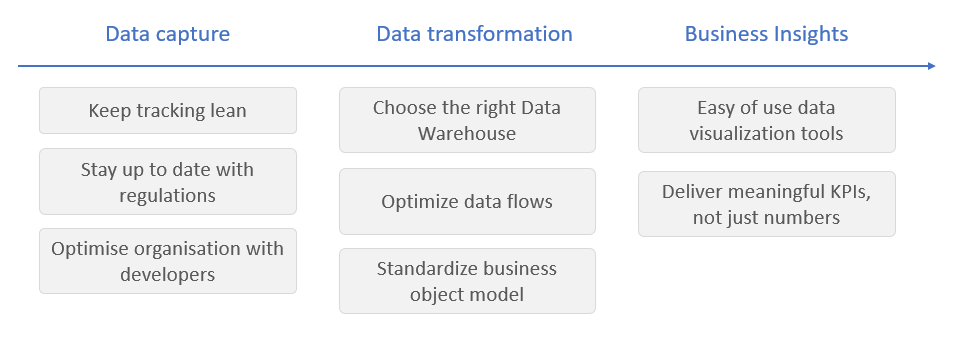
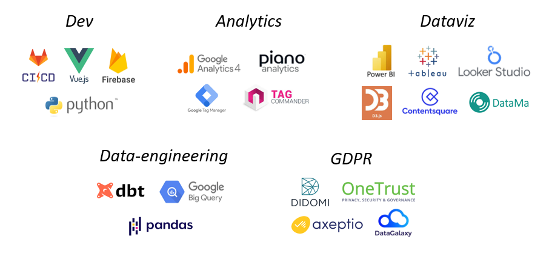
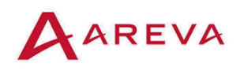
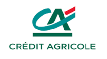
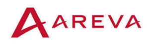
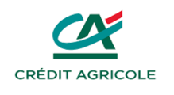
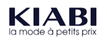
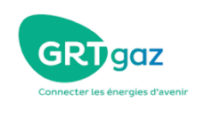
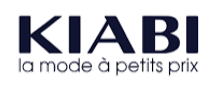
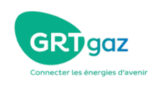

IT & Data Manager
I give you the strategy, technology, and skills to boost your IT & data services
You're facing challenges
After many years building on tools you might wonder if the choice was good, what value do they bring, are they suited to your team and provides you with the best value
I bring solutions
Strategic vision. I've worked in more than 40 companies in both IT departments and Data Marketing entities. I'm an engineer by trade and have a good eye to analyse if your organisation, process, tools and people are well used, if you are missing opportunities, if some tools are no longer pertinents
Delivery mindset. I've been putting into place data tools for years now and know best practices, traps, how to stay lean, how to not overdo the job.
Hard skills. I've been putting into place data tools for years now and know best practices, traps, how to stay lean, how to not overdo the job.
Don't trust my word, trust theirs
Edward helped us to grow our Analytics team over the years. He managed to create a strong relationship with product teams and developpers, and found solutions in a complex technical context.
Vincent Cabanis
Analytics Manager, Engie
Edward quickly understood our complex IT SAP ecosystem and managed to identify, specify, test & delivery impactful changes for our business teams, collaborating with comex level stakeholders down to operational & integrator teams teams.
Benoit Sponton
Chief Information Officer, Leasys
Brands I've worked with
 




 


